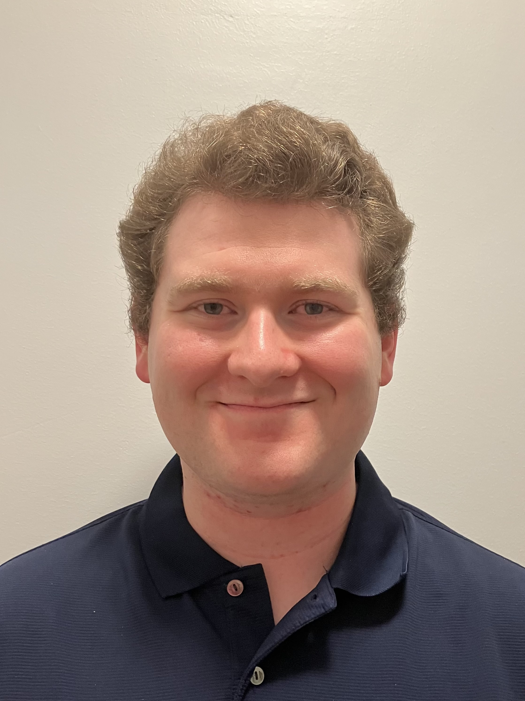

Aspiring Software Engineer
Epicodus student Ben Reynolds
I’m an aspiring coder, and a dedicated worker. In the work place I value honesty and respect very highly and am quick to integrate into the role that is expected of me.
- Animal Shelter
This website is one I designed with my partner as a mock animal shelter website for 4 unique animals in need of a new home.
- Skyrim Vampire website
A website my partner and I dedicated to the Vampire race in the popular game Skyrim.
- Chili Band
A tribute to my partner's favorite rock band Red Hot Chili Peppers.
- I graduated from Oregon State University in 2020 with a Bachelor's Degree in Science with a focus on Business Administration. I'm here at Epicodus because I see an opportunity for a better life in the tech industry.
- My current interest is in developing programs to aid in mental health.
- My hobbies playing games, going for walks, and spending time with my family.
- I have experience in coding with HTML and Markup. I am observant, and have very good attention to detail.